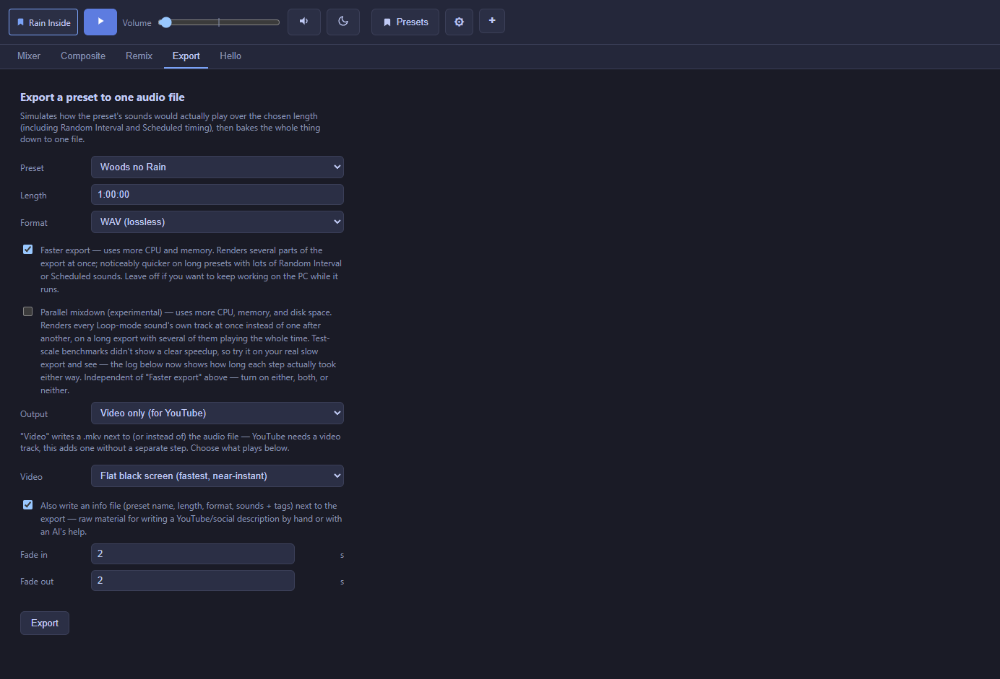

Export
Bake a whole preset down to one finished audio or video file.

The Export tab simulates how a preset would actually play over a chosen length — including Random Interval and Scheduled sounds firing at realistic moments, Sound Group and whole-mix processing, and Fluctuation drift — then renders the whole thing down to one file. It's the same engine that plays your mix live, run once and captured to a file instead of listened to in real time.
Basic settings
- Preset and Length — which mix, and how long the exported file should be.
- Format — including lossless WAV and space-saving compressed formats (Opus needs a specific sample rate internally, which Noctívago handles for you).
- Fade in / out — in seconds, at the start and end of the export.
Video output, for platforms that need one
Choose Audio only, Video only, or Both. When a video is produced, pick its background:
| Background | What it is |
|---|---|
| Flat black screen | Fastest option, just your audio muxed under a plain 1080p frame — good for a straightforward YouTube upload. |
| Audio-reactive visualization | Waveform, spectrum, or vectorscope, in a color/palette you choose, reacting to the actual audio. |
| Loop a video file | Your own background video clip, looped or trimmed to match the export length. |
| Loop an image | A still image, optionally with a slow spin or a "DVD bounce" motion. |
Speed options
Faster export renders independent parts of the export several at once instead of one after another — noticeably quicker on a long preset with a lot of Random Interval/Scheduled activity, at the cost of using more CPU and memory while it runs.
Extra output
An optional info.txt file written alongside the export lists the preset name, length, format, and every included sound's name and tags — handy raw material for writing a YouTube or social media description by hand or with an AI's help (it even ends with a ready-to-paste prompt for that).
Progress and completion
A real progress bar and a scrolling log show exactly what's rendering; the log also saves to a text file next to the export so it's not lost if you're not watching. A chime plays on completion (a different tone for success vs. failure) so you don't have to babysit a long export.